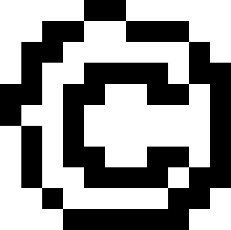

DITHEROSCOOP
×
What is dithering?
How does this tool work?
deze knop doet dit
deze knop doet dat

How does this work? & What is dithering?
upload
JPG-PNG
save
as PNG
brightness
error
View this tool on your desktop.